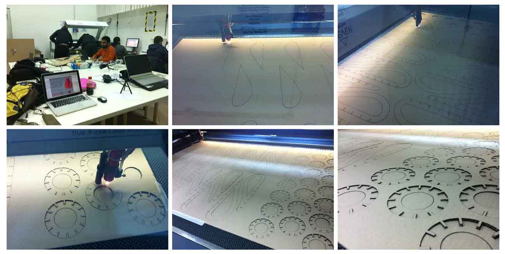

Week 3
computer-controlled cutting
computer_cutting
ASSIGNMENT: design, make, and document a press-fit construction kit.
computer_cutting/index.htmlLASER-CUTTER SLICES
The third task is to design, make and record the construction
Problem n.1: I have never used a laser cutter.
Problem n.2: material
Problem n.3: dimensions / weight
To reach the goal I DECIDED to design a lamp. I used "Rhinoceros", to shape the lamp and to check joints, I choose "Illustrator" to create a useful file.
The material we can use is a single wall board cardboard (1300x900x2,5). A very versatile material, but with different behaviors depending of the cut, so I chose to use curved cuts.
Design idea was born from the simple act of slicing a pear.
MACHINE FEATURES
Laser cut, Vrel laser CO2 ME-1300;
Work area (XxYxZ): 1300x900x360 mm;
Power: 130W / CO2 a tubo in vetro sigillato;
Resolution: da 100 a 1000 DPI, 0.01 mm;
Materials: paper, cardboard, leather, plexiglass, methacrylates, acrylics, fabrics, wood.
SOFTWARE
Rhino 3D: to develop forms, and to create joints.
Illustrator: to convert files in the right format for the Laser cut.
FABRICATION PROCESS
The lamp consists of 12 vertical and 9 horizontal slabs.

ADVICE and SETTINGS (for laser cutting)
I use: Speed 200, Power cut 26, Power corners and curves 11.
ASSEMBLY PROCESS
I took the socket, the electric cable, the switch, purposely bought, and I assembled the support for electricity. I joined it with the first horizontal ring and I started to assemble vertical slats.
P.S.: Friday, ready for the first test, the machine got crazy and did not cut. We decided to insist on Saturday, and at 18pm we found the way. We managed to cut one layer at time.
PHOTOGRAPHIC DOCUMENTATION


Download the files:
inside.ai outside.ai model.3dmVINYL-CUTTER
Using the vinyl-cut has been very funny. I am obsessed by geometric shapes, so I made a hexagonal pattern, repeated in multiple dimensions. It has been really nice to use an apparently simple machine as the vinyl-cut, because you understand the potential just by using it.
MACHINE FEATURES:
Roland Stika SV-15, vinyl cut.
Work area (XxY):340x1000.
Dimensions of the material: width 360-381mm. Max length 1100mm.
Materials (XxY): PVC o material for stickers.
Cut Studio is the software to generate the Gcode of Stika, it recognizes all graphics formats (ai, bmp, jpeg, etc.) but he loves only files little complex as bmp files.
In fact, I have drawn the pattern with Illustrator, but the format .ai created problems to Cut Studio, so I saved in .bpm with Paint, and everything went smoothly.
Phases:
- Opening Cut Studio;
- Importing file;
- Finction OBJECT;
- Image Outline;
- EXTRACT contour lines;
- OK;
- Cutting.
P.S.: Before you start cutting, you have to place the material in the machine. To ensure the success of the cut, you have to place a thin cardboard under the material. In this way, the machine works better.
SOFTWARE
Illustrator: to draw the project;
Paint: to convert file format;
Cut Studio: to create G-code.
{kind=link}